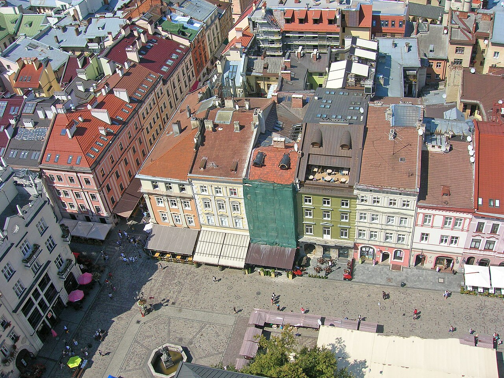

Львів
Рідне місто культури · Україна

Panorama Rynok Platz Blick W Lemberg Ukraine — Herbert wie, CC BY-SA 4.0, Wikimedia Commons. Зменшена копія; без кадрування та змін змісту.
Коротко про місто
Львів для мене — рідне місто культури. Його характер розкривається в історичній забудові, театрах і міських площах. Ансамбль історичного центру зберіг середньовічне планування та сліди взаємодії різних культур. [1]
Особливе місце в цьому образі займають площа Ринок, Ратуша та Львівська опера. Мені близьке поєднання архітектурної спадщини з живою культурою: місто цікаве не лише своїм минулим, а й тим, як воно продовжує надихати сьогодні. [2] [3] [4]
Чому я обрав це місто
Я обрав Львів, тому що це моє рідне місто. Для мене його цінність полягає в культурі, історичній архітектурі та відчутті зв’язку з домом.
Три цікаві факти
Визначні місця
- Площа Ринок — Історична площа з кам’яницями, що допомагає відчути архітектурний характер Львова. [2]
- Львівська ратуша — Будівля в центрі площі Ринок із вежею — один із впізнаваних символів міста. [3]
- Львівська національна опера — Театр опери та балету імені Соломії Крушельницької, пов’язаний із музичною культурою міста. [4] [5]
Моя оцінка
Для мене Львів має найбільшу особисту цінність завдяки зв’язку з домом. Найсильніша сторона міста в моїй добірці — його культура й історична атмосфера.
Це оцінка за моїми інтересами, а не відгук про туристичну поїздку.
Дізнатися більше
Офіційний туристичний сайт Львова
Джерела фактів
- UNESCO: L’viv — the Ensemble of the Historic Centre
- lviv.travel: Площа Ринок у Львові
- Офіційне конференц-бюро міста Львова: Архітектура
- Львівська національна опера: Уродини Львівської опери
- lviv.travel: Театр опери та балету ім. Соломії Крушельницької
Джерела переглянуто 10 листопада 2026 року.